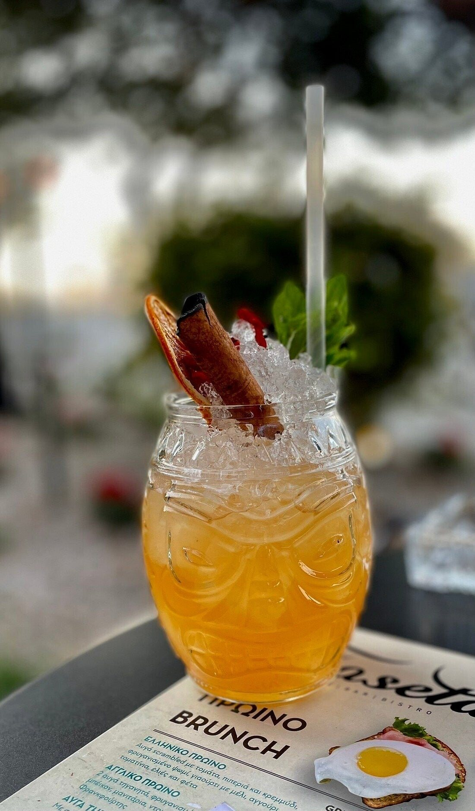
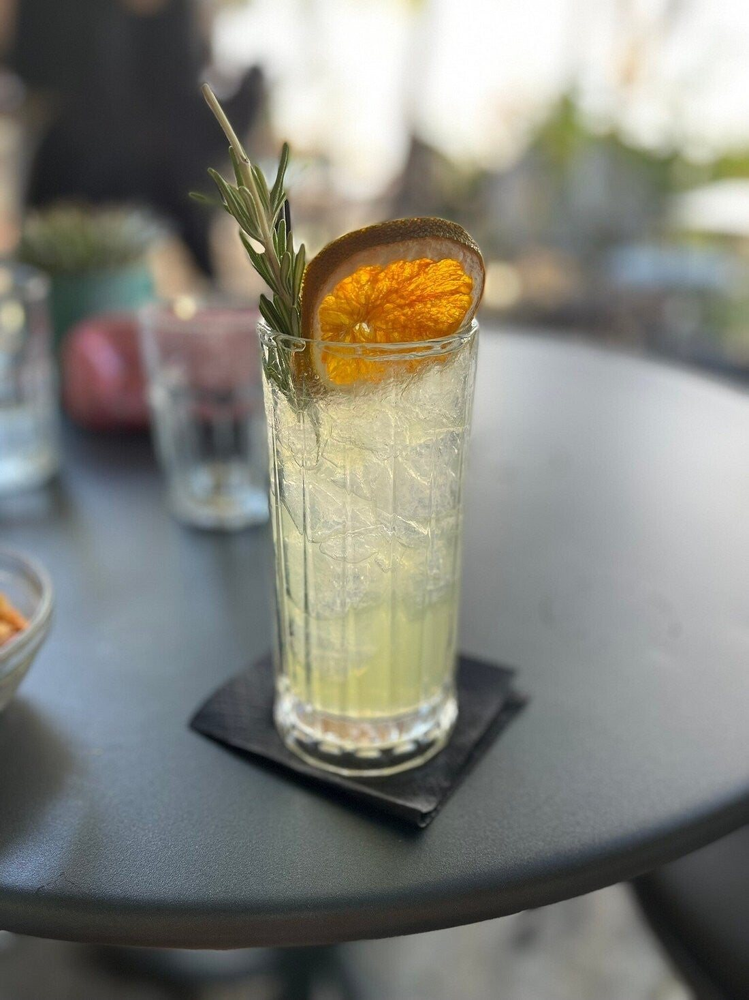
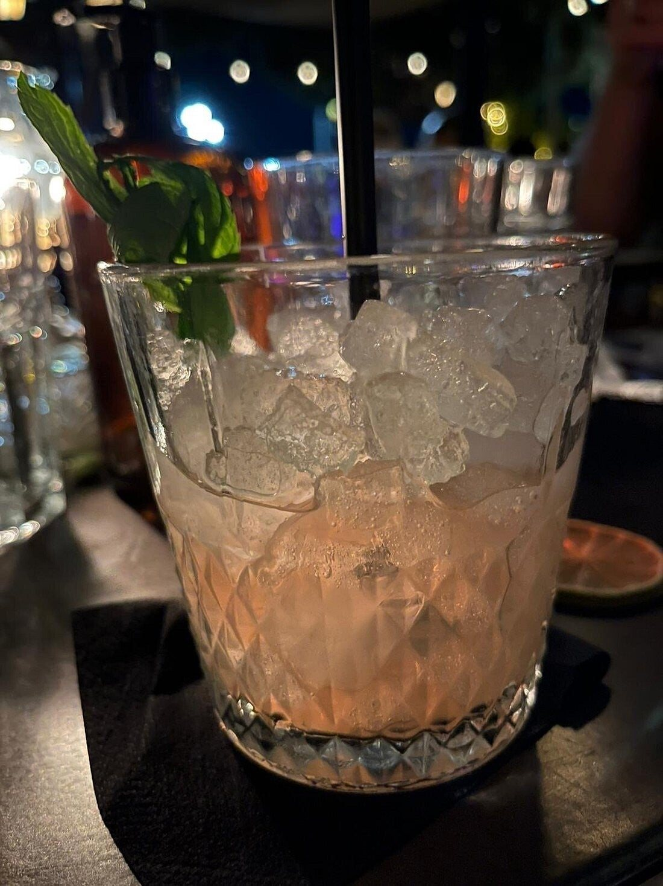

Kos-stad
Direct aan de haven van Kos-stad, aan de boulevard, vind je Kaseta Café Bar. Een gezellige plek met een ruim terras en uitzicht op de haven, waar het vooral later op de dag goed toeven is met een cocktail.

De cocktailkaart biedt een ruime keuze aan verschillende smaken en combinaties. Van verfrissende klassiekers tot fruitige cocktails en kleurrijke mixen. Met de haven op de achtergrond is het een fijne plek om rustig van een drankje te genieten, af te spreken met vrienden of de avond in Kos-stad door te brengen.

Naast de cocktails kun je bij Kaseta ook terecht voor koffie, ontbijt, brunch en andere drankjes. De combinatie van de ligging aan het water, het terras en de uitgebreide drankkaart maakt het een bekende ontmoetingsplek aan de haven.

Adres
Akti Miaouli 4, Kos-stad
Telefoon
Openingstijden
Openingstijden kunnen per seizoen wijzigen.